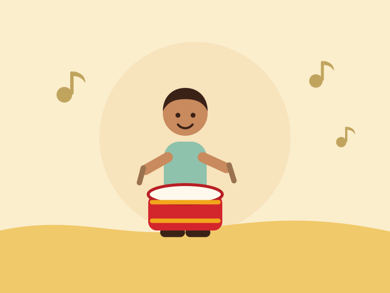
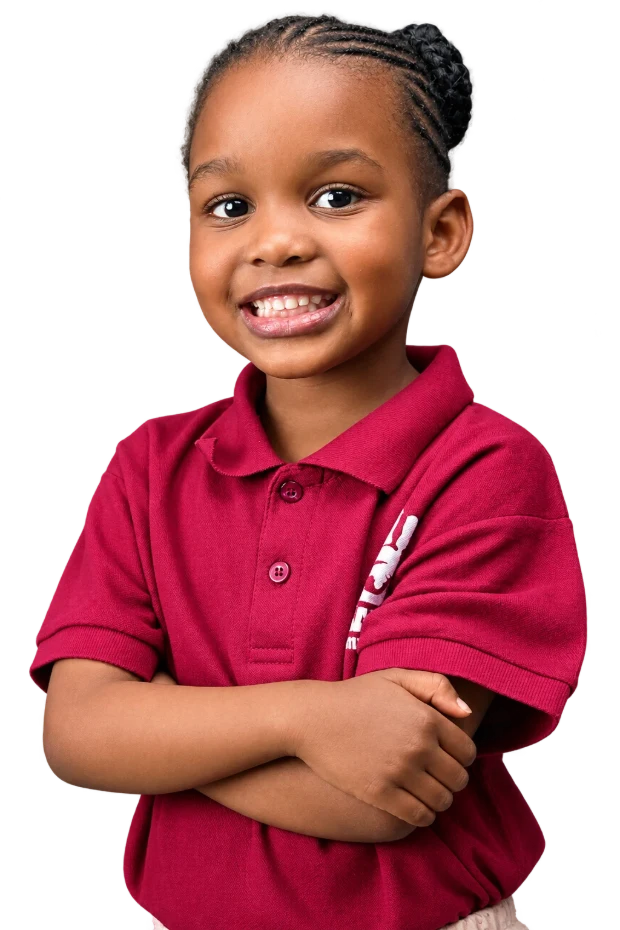

First steps away from home
Playing Class
Routine, songs and plenty of play. We help the youngest ones settle, make friends and feel safe in a new place.
Show detailsClasses stay small so every child is seen, heard and settled.
A full, calm day of care Monday through Friday.
Bright, tidy classrooms that invite children to get busy.
Activity-based lessons led by experienced, patient staff.
J & S T O T S
Our mission
We provide and promote early learning and child-care programmes that meet the real needs of children and their families — right here in Munyonyo.
Our vision is to bring up a holistic child: spiritual, social, physical, emotional and cognitive growth, nurtured together rather than one at a time.
Our classes
First steps away from home
Routine, songs and plenty of play. We help the youngest ones settle, make friends and feel safe in a new place.
Show details
Letters, numbers, confidence
Stories, sounds, counting and sharing. Children build the language and number sense that makes Primary One feel easy.
Show details
The first primary year
Reading, writing and number work in small groups, with the same warm care our younger classes are known for.
Show details
Through the week
Music and movement, art, outdoor play and group games — where hidden talents tend to show themselves first.
Show detailsWhy choose us
Rooms children want to walk into — bright, well kept and arranged so little hands can reach what they need.
Learning led by teachers who have done this a long time, and who know that patience teaches more than pressure.
Children learn by doing, making and trying. Play is not a break from learning here — it is how the learning happens.
A typical day
An outline of the rhythm children settle into. We confirm the exact class timetable when you visit.
Children are received, settled and greeted by name.
Songs, prayer, the day's news and a story together.
Letters, numbers and hands-on work in small groups.
A proper break — eating together, then quiet time.
Music, movement, art or outdoor play.
Tidy up, a word with parents, and off home.
What we stand for
“To bring up a God-fearing child who cares for self and others.”
“Discipline, confidence and self-esteem are vital ingredients in the development of a child.”
“Quality care and trust, to meet the needs of the children and families we serve.”
“Life-long learning — we share a responsibility to support and nurture children for the whole of their lives.”
“Partnership. Respectful relationships are very important to how we operate.”

Admissions open
Come and see the classrooms, meet the staff and ask us anything. We are opposite Munyonyo C.O.U. Church.
0774 197 708